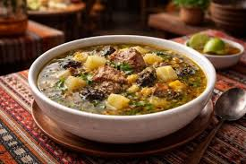
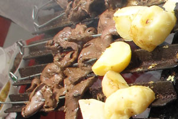

CONTENIDO:
PLATOS TÍPICOS DE LA PAZ
La ciudad de La Paz es conocida por su rica gastronomía, que combina ingredientes locales con influencias indígenas y españolas. Algunos de los platos más emblemáticos son:
| Plato | Descripción | Imagen |
|---|---|---|
| Salteñas | Empanadillas rellenas de carne, verduras y especias, cocidas en un horno tradicional. | |
| Chairo | Una sopa caliente a base de carne de cordero o res, acompañada de papas y otros ingredientes. |  |
| Anticuchos | Brochetas de carne de res o cerdo, marinadas en una mezcla de especias y servidas con papas fritas. |  |